6月5日是世界环境日。今年我国确定的环境日主题为“人与自然和谐共生”。
坚持走绿色发展之路，共筑生态文明之基。
党的十八大以来，在以习近平同志为核心的党中央坚强领导下，在习近平生态文明思想指引下，中国人民凝心聚力，坚定不移走绿色发展之路，人与自然和谐共生的美丽中国，正在从蓝图变为现实。
深谋远虑——建设生态文明求解人与自然和谐共生之道
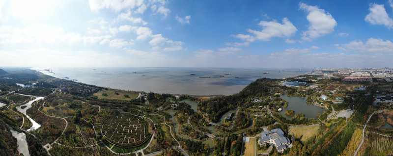
这是江苏南通五山及沿江地区景色（2020年11月13日摄，无人机照片）。新华社记者 季春鹏 摄
江苏省南通市，是万里长江奔流入海的“最后一站”。市区南部，黄泥山、马鞍山、狼山、剑山、军山等五山临江而立，山水相依。
“以前我们就住在江边，但看不到江。”南通市居民黄家勇说，“码头作业灰尘太多，窗户不能开、被子不能晒。”
100多年前，实业家张謇希望家乡五山地区成为“花园及风景区”。然而，五山及滨江地区一度危化品码头、散货码头、集装箱码头等星罗棋布，给当地带来污水、扬尘等一系列环境污染问题，导致这里“滨江不见江，近水不亲水”。
又何止是南通？曾经，从巴山蜀水到江南水乡，污水入河入江、码头砂石堆积、化工企业围江，长江水质持续恶化、生态功能逐步退化，生态系统警钟迭起。习近平总书记曾经痛心地形容母亲河：“病了，病得不轻了”。
又何止是长江？曾经，经过几十年快速发展，积累下来的环境问题进入高强度频发阶段，秋冬季雾霾频发拉响空气污染警报，江河鱼虾减少、水质频频告急。
2016年1月5日，习近平总书记在重庆召开推动长江经济带发展座谈会，振聋发聩地提出“共抓大保护，不搞大开发”。
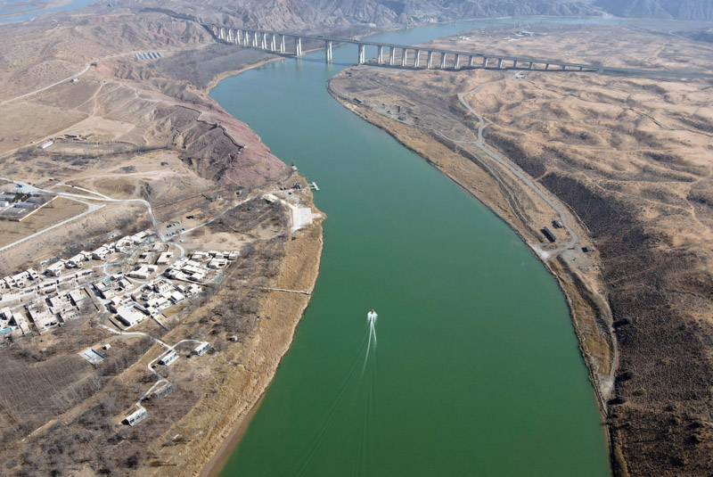
黄河流经宁夏中卫市沙坡头区（2021年3月3日摄，无人机照片）。新华社记者 唐如峰 摄
时光流转，张謇的梦想终成现实。近年来，南通当地累计关停200多家散乱污企业，清理了160多条小杂船，关闭了当时全国最大的进口硫磺集散基地，修复腾出岸线，新增森林面积，在长江边逐步构筑起一道绿色廊道。
“现在我们晚上经常会去江边公园散散步，很舒心的。”黄家勇笑着说。
2020年11月12日，习近平总书记来到五山地区滨江片区考察调研。“过去脏乱差的地方变成现在公园的绿化带，说明我们只要下决心，就一定能落实好长江经济带发展共抓大保护、不搞大开发的要求。”习近平总书记说。
水质改善、江豚腾跃，长江母亲河正在重新焕发生机。
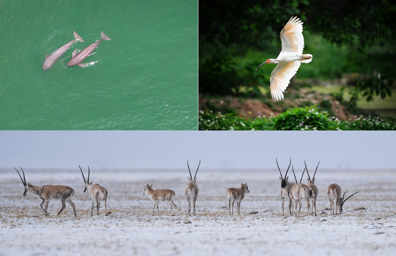
这是一张拼版照片：左上图为在湖北省宜昌市江边，长江江豚在水中嬉戏（无人机照片，新华社记者肖艺九5月11日摄）；
右上图为陕西省汉中市洋县朱鹮生态园内的朱鹮（新华社记者刘潇5月13日摄）；
下图为藏羚羊在三江源可可西里地区活动（新华社记者吴刚4月20日摄）。新华社发
生态兴则文明兴，生态衰则文明衰。生态文明建设是关系中华民族永续发展的根本大计。
站在这样的高度，以习近平同志为核心的党中央求解人与自然和谐共生之道，指明了生态文明之路，擘画了美丽中国的宏伟蓝图。
党的十八届五中全会提出五大发展理念，绿色发展成为推动高质量发展的题中之意；党的十九大明确提出加快生态文明体制改革，建设美丽中国；党的十九届五中全会再次强调“推动绿色发展，促进人与自然和谐共生”……一系列重大部署，宣示了以习近平同志为核心的党中央推进生态文明建设的坚定决心。
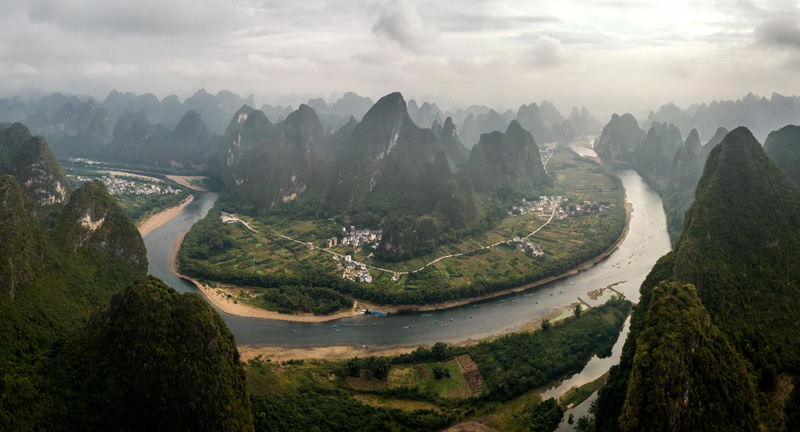
这是2018年10月18日拍摄的广西桂林阳朔县兴坪镇的漓江景色（无人机拼接照片）。新华社记者 李鑫 摄
在广西桂林考察漓江阳朔段后，习近平总书记强调，把保持山水生态的原真性和完整性作为一项重要工作，深入推进生态修复和环境污染治理，杜绝滥采乱挖，推动流域生态环境持续改善、生态系统持续优化、整体功能持续提升。
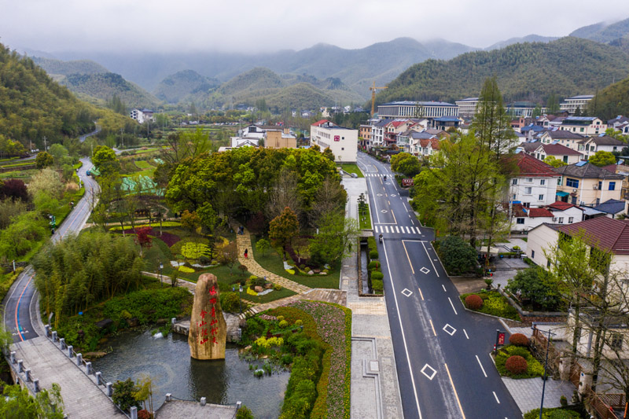
空中俯瞰浙江省安吉县天荒坪镇余村（2020年3月31日摄，无人机照片）。新华社记者 徐昱 摄
在浙江省湖州市安吉县天荒坪镇余村村考察调研时，习近平总书记对他们发展绿色经济、带动村民增收致富的做法给予肯定。“实践证明，经济发展不能以破坏生态为代价，生态本身就是经济，保护生态就是发展生产力。”习近平总书记说。
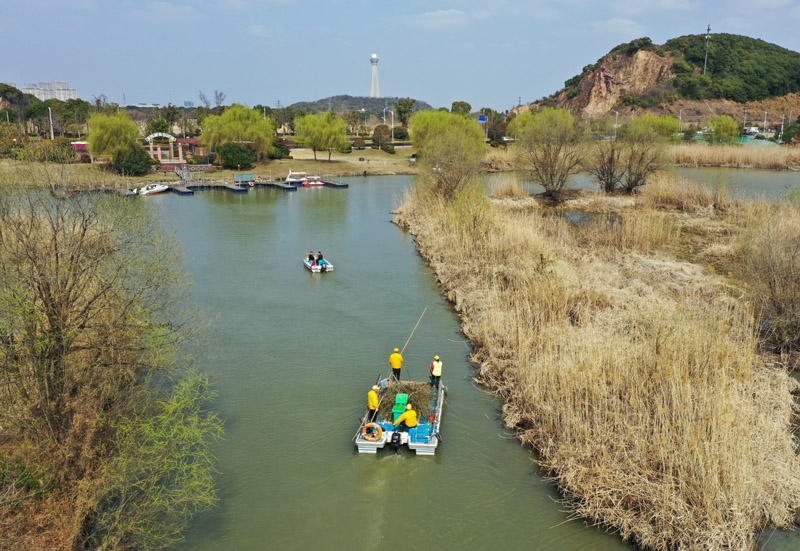
2021年2月24日，浙江湖州吴兴区八里店镇移沿山村河长带队在移沿山村开展巡河、保洁作业（无人机照片）。新华社记者 翁忻旸 摄
在云南滇池岸边，习近平总书记详细询问滇池保护治理和水质改善情况。总书记强调，推动经济高质量发展，决不能再走先污染后治理的老路。只要坚持生态优先、绿色发展，锲而不舍，久久为功，就一定能把绿水青山变成金山银山……
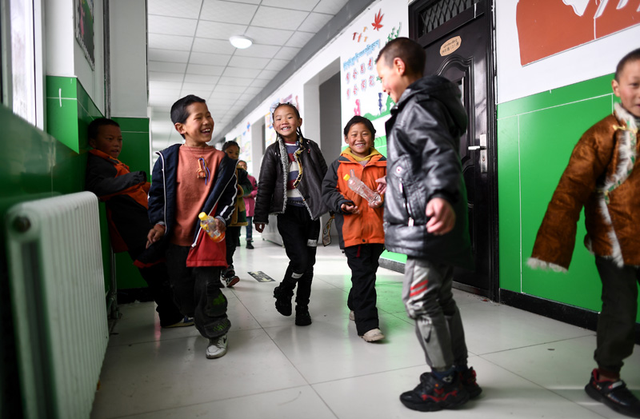
2021年3月26日，青海玛多县民族寄宿制中学二年级的学生在课间玩耍。该校目前采用清洁取暖方式，学生的学习和生活环境大为改善。新华社记者 张宏祥 摄
这些年，习近平总书记赴地方考察，生态文明建设是一项重要安排。祖国的山山水水见证了习近平总书记心系中华民族永续发展的情怀。
“绿水青山就是金山银山”；
“像保护眼睛一样保护生态环境，像对待生命一样对待生态环境”；
“保护生态环境就是保护生产力，改善生态环境就是发展生产力”；
“人不负青山，青山定不负人”；
“统筹山水林田湖草沙系统治理”；
……
掷地有声的话语，闪耀着习近平生态文明思想的光芒，指引着美丽中国建设不断向纵深推进。
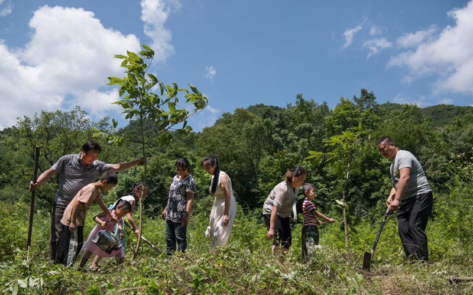
姚祖元（右一）与家人一起种树（2019年7月13日摄）。在秦岭深处的陕西省汉中市留坝县火烧店镇，姚家五代人历时70年深耕秦岭的故事在当地家喻户晓，传为佳话。新华社记者 陶明 摄
党的十八大以来，我国一体治理山水林田湖草沙，开展了一系列根本性、开创性、长远性工作，决心之大、力度之大、成效之大前所未有，生态文明建设从认识到实践都发生了历史性、转折性、全局性变化。
今年5月26日，生态环境部正式发布《2020中国生态环境状况公报》。这是一份绿意满满的报告，2020年和“十三五”生态环境重点目标任务均圆满超额完成，全国生态环境质量明显改善。
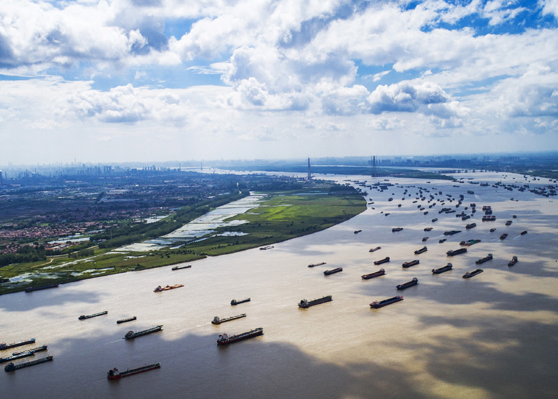
船舶在湖北省武汉市阳逻港区水域行驶（2018年8月13日摄，无人机照片）。新华社记者 肖艺九 摄
蓝天更多，全国地级及以上城市优良天数比例提高至87%；河流更清，地表水优良断面比例提高到83.4%；家园更美，各级各类自然保护地总数达到1.18万处……
绿色答卷的背后，是中国这个最大发展中国家迈上绿色发展之路的坚定步伐，是14亿中国人用实际行动推动绿色转型的不懈努力。
跟雾霾交锋的战场上，我国北方地区2500多万户实施清洁取暖改造，全国淘汰2400多万辆黄标车、老旧车，229家钢铁企业6.2亿吨粗钢产能实施超低排放改造，全面整治散乱污企业及集群，许多地方的钢铁、煤炭等落后产能被淘汰……
为守护碧水长流，养殖户收起网箱将河湖还给自然，城市污水管网快速推进，污水处理能力不断提升，长江沿线化工企业“关改搬转”……
以制度力量护航绿色发展之路。近年来，环境保护法、环境保护税法以及大气污染防治法、水污染防治法和土壤污染防治法等法律更加完善。涉及生态文明建设的改革方案相继出台，尤其是中央生态环境保护督察这把“利剑”，守护着祖国的绿水青山。
“中国将提高国家自主贡献力度，采取更加有力的政策和措施，二氧化碳排放力争于2030年前达到峰值，努力争取2060年前实现碳中和。”
2020年9月22日，习近平主席在第七十五届联合国大会一般性辩论上作出庄严承诺，向全世界释放出中国坚定走绿色发展之路的强烈信号。
久久为功——美丽中国建设迈出坚实步伐
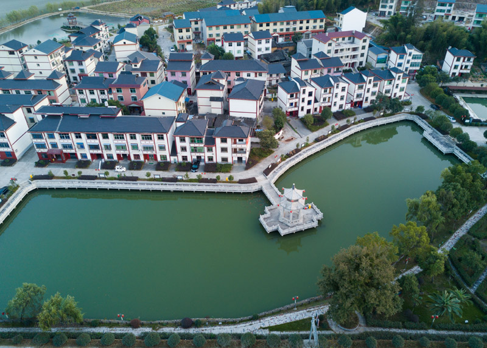
2020年11月20日拍摄的福建省三明市将乐县高唐镇常口村（无人机照片）。新华社记者 宋为伟 摄
福建省三明市将乐县高唐镇常口村。夏日阳光下，金溪河从村口缓缓流过，岸边是几千亩天然阔叶林。村支书张林顺坐在村里的一棵大树下告诉记者：“我们村一棵树没砍，靠卖碳票就挣了14万多元。”
他还记得，小时候常跟着长辈们上山砍树。由于连年过度砍伐，山上一度见不着成材的树木。从2003年开始，三明市探索林业产权制度改革，试行“分山到户、均林到人”改革，实现了“山定权、树定根、人定心”。党的十八大以来，三明市开始探索生态产品价值实现机制，植树护林的理念更加深入人心。
就在前不久，常口村和三明市沙县区夏茂镇俞邦村举行三明林业碳票首发仪式，发放首批林业碳票5张，共计碳汇29715吨。张林顺领到的碳票涉及常口村3197亩生态公益林。
据三明市林业局副局长陈美高介绍，碳票是以林木生长量增量为测算基础换算成的碳减排量，以“票”的形式发给林木所有权人，从而把“空气”变成可交易、可收储、可贷款的“真金白银”。
“只要林子管好了，林木所有权人就能获得源源不断的收入。”陈美高说。
从砍树为生到护林增收，常口村的发展是一扇窗，照见了在习近平生态文明思想引领下中国发生的巨大变化。这是一场发展观的重大变革，指引着我们坚定走上生态文明之路、建设美丽中国的切实行动。
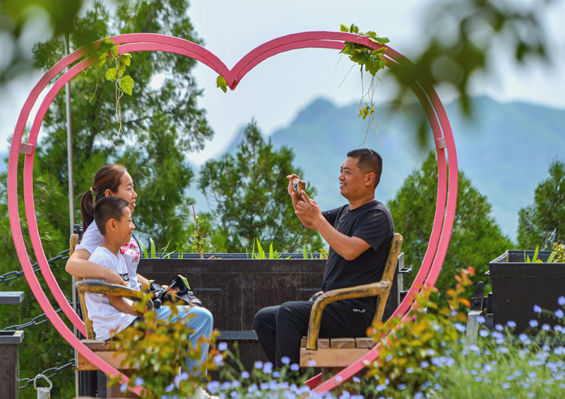
2021年5月30日，游客在河北省邯郸市磁县天保寨景区游玩。新华社记者 王晓 摄
曾经因煤而兴的河北磁县，响应国家去产能、划定生态红线等政策安排，下决心关停不少煤矿，依托独特生态资源，大力发展“美丽经济”，走出一条生态优先、绿色发展的新路子。
生态之美催生发展之变。2020年，磁县全年接待游客700余万人次，增长18%，旅游业总收入增长19.4%。
经济特区深圳统筹推进茅洲河、深圳河等为代表的重污染河流治理，并以此为牵引带动周边环境整体提升，实现全市域消除黑臭水体。
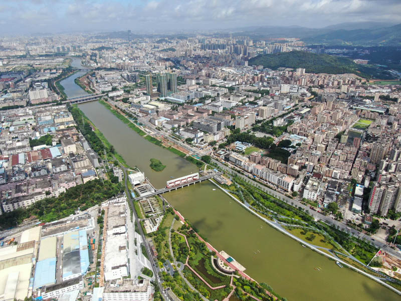
这是2020年6月15日拍摄的治水后的深圳茅洲河（无人机照片）。新华社记者 邓华 摄
70多岁的居民黄耀棠回忆说，以前的茅洲河水“比墨水还黑，比石油还稠”。2016年起，深圳以绣花功夫推进雨污分流、源头治理，居民们发现“茅洲河变清变美了，不时还有白鹭飞过”。如今，当地告别散乱污、拥抱高精尖，建设了多个环保科技创新产业园。
山水林田湖草沙是生命共同体。党的十八大以来，随着生态文明建设深入推进，一块块生态环境的短板正在补上，一个个阻碍绿色发展的体制和制度坚冰正在消融，绘出人与自然和谐共生的美丽图景。
三北防护林、天然林保护、退耕还林还草等一系列重大生态工程深入推进。“十三五”期间，我国森林覆盖率提高到23.04%，森林蓄积量超过175亿立方米，连续30年保持“双增长”，成为森林资源增长最多的国家。
以国家公园为主体的自然保护地体系加快建立，国家公园体制试点工作在理顺管理体制、加强生态保护修复等方面取得阶段性成果。
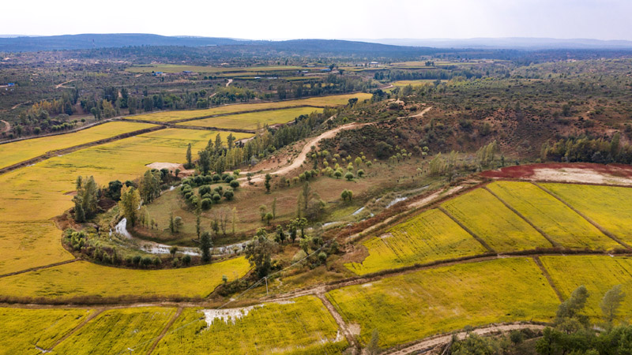
2020年9月26日拍摄的陕西省靖边县黄蒿界镇马季沟村稻田（无人机照片）。
近年来，靖边县实施了“三北”防护林、退耕还林、流域治理等生态建设工程，北部沙漠区裸露明沙完全消失，
中部农田林网蔚然成荫，南部山区夏季绿色满山。新华社记者 陶明 摄
河长制、湖长制全面建立，一条条江河、一个个湖泊有了专属守护者，一大批民间河长、湖长踊跃上岗。
今年1月，中共中央办公厅、国务院办公厅公布《关于全面推行林长制的意见》，提出确保到2022年6月全面建立林长制，这意味着我国所有的森林和草原都将拥有专属守护者。
越来越多的珍稀濒危野生动植物得到更好保护：朱鹮从发现时的7只，恢复到5000余只；藏羚羊从几万只恢复到目前的30多万只；长江旗舰物种长江江豚正在“回家”……
在总书记心中，有两条河的分量尤其重。
一条是长江——“共抓大保护，不搞大开发”，给沿江省市高速疾奔的发展方式敲了警钟。此后，习近平总书记多次考察长江，提出长江经济带应该走出一条生态优先、绿色发展的新路子。
一条是黄河——从2019年8月到2020年6月，习近平总书记先后4次考察黄河。2019年9月，习近平总书记主持召开黄河流域生态保护和高质量发展座谈会，将黄河流域生态保护和高质量发展上升为重大国家战略。
如今，长江之病渐消，江豚频现，鱼翔浅底。沿黄省份也大步迈向更高质量发展之路。
全民义务植树如火如荼展开，野生动物保护志愿者活跃在乡间山林，生活垃圾分类变成新风尚……大江南北，人们正用汗水浇灌和培育共同的绿色家园。
擘画新篇——为开启全面建设社会主义现代化国家新征程奠定坚实生态环境基础
水鸟迎风鸣叫，芦苇和柳灌丛郁郁葱葱……曾经一度萎缩的呼伦湖，随着近年来一系列修复和治理项目的实施，水域面积逐年扩大，湿地生态逐步恢复。
年过五旬的牧民侯玉广从小生活在呼伦湖附近。他亲眼见证了湖水的萎缩与恢复。
“小时候，家里的牛羊常到湖边饮水。后来环境恶化，湖周围几乎没草了，鸟也不见了。”侯玉广告诉记者，如今生态好了，沙子看不见了，鸟和鱼也都回来了。
栖居在青山碧水之间，是人们共同的心愿。
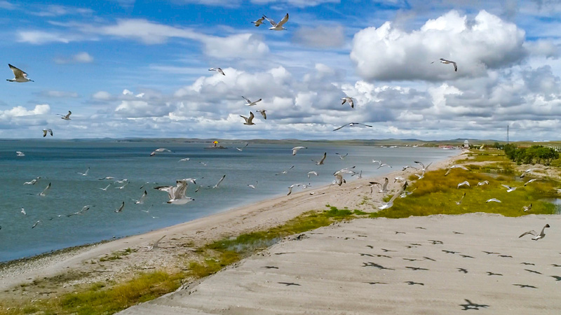
这是2019年8月28日拍摄的呼伦湖畔的水鸟（无人机照片）。新华社记者沈伯韩摄
经过不懈努力，我国生态环境质量持续改善。同时必须清醒看到，我国生态文明建设挑战重重、压力巨大、矛盾突出，还有不少难关要过、硬骨头要啃、顽瘴痼疾要治，形势仍然十分严峻。
“生态环境修复和改善，是一个需要付出长期艰苦努力的过程，不可能一蹴而就，必须坚持不懈、奋发有为。”习近平总书记在中共中央政治局第二十九次集体学习时强调指出。
进入新发展阶段，深入贯彻新发展理念，加快构建新发展格局，对加强生态文明建设、加快推动绿色低碳发展提出了新的要求。
——将“生态文明建设实现新进步”作为“十四五”时期经济社会发展主要目标之一；
——将“广泛形成绿色生产生活方式，碳排放达峰后稳中有降，生态环境根本好转，美丽中国建设目标基本实现”，作为到2035年基本实现社会主义现代化的远景目标之一；
——“十四五”规划纲要中，设专篇对“推动绿色发展，促进人与自然和谐共生”作出具体部署和安排，明确要求实施可持续发展战略，推动经济社会发展全面绿色转型，建设美丽中国。
蓝图已经绘就，奋斗书写辉煌。
开启全面建设社会主义现代化国家新征程，推动高质量发展，创造高品质生活，我国生态环境保护需要付出更为艰巨的努力。
2020年8月25日，居民将生活垃圾送到海口市美兰区和平南街道爱心环保屋，用垃圾换取纸巾、肥皂等生活用品。新华社记者郭程摄
“十四五”时期，我国生态文明建设进入了以降碳为重点战略方向、推动减污降碳协同增效、促进经济社会发展全面绿色转型、实现生态环境质量改善由量变到质变的关键时期。
“实现碳达峰、碳中和是一场广泛而深刻的经济社会系统性变革，要把碳达峰、碳中和纳入生态文明建设整体布局，拿出抓铁有痕的劲头，如期实现2030年前碳达峰、2060年前碳中和的目标。”今年3月15日，习近平总书记主持召开中央财经委员会第九次会议时强调。
——加快发展方式绿色转型，坚持生态优先、绿色发展，严格控制高耗能高排放项目建设，加大货物运输结构调整力度，推动建筑领域绿色低碳发展，壮大节能环保等产业。
——协同推进减污降碳，以改善生态环境质量为核心，深入打好污染防治攻坚战。
——积极推进应对气候变化，推动制定2030年前碳排放达峰行动方案。
——完善绿色低碳政策和市场体系，强化绿色发展的法律和政策保障。
——广泛培育绿色低碳生活方式，提升全社会绿色低碳意识，通过生活方式绿色革命，倒逼推动生产方式和供给绿色转型。
“我们将以经济社会发展全面绿色转型为引领，以减污降碳为主抓手，加快形成节约资源和保护环境的产业结构、生产方式、生活方式、空间格局，坚定不移走生态优先、绿色低碳的高质量发展道路。”生态环境部部长黄润秋表示。
开局之年起好步、开好头，对美丽中国建设至关重要。
今年5月21日，习近平总书记主持召开中央全面深化改革委员会第十九次会议，审议通过了《关于深化生态保护补偿制度改革的意见》。
会议指出，要围绕加快推动绿色低碳发展、促进经济社会发展全面绿色转型，完善分类补偿制度，加强补偿政策的协同联动，统筹各渠道补偿资金，实施综合性补偿，促进对生态环境的整体保护。
新任务赋予新使命，新征程展现新作为。
深入贯彻习近平生态文明思想，全面落实党中央、国务院决策部署，脚踏实地、迎难而上，我们一定能够以生态环境高水平保护推动经济高质量发展，以生态文明之光照耀前行道路，推动中华民族实现永续发展。（参与记者：张逸之）
版权所有：吉林省安图县林业局-安图县林业局 电话：0432-64606800 地址：吉林市丰满区吉林大街78号
网站标识码：2202000006 吉ICP备05005864号

吉公网安备22021102000204号
网站地图